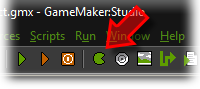
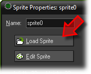
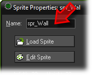
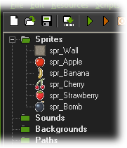

Tutorial
Page 2 of 15
Adding Sprites
Our game needs images for the walls, the fruits, and the bomb. Such images are called sprites in GameMaker. So the first step is to add some sprites. To do so, we will use some sprites that have been
prepared especially for this tutorial.
To add a sprite click on the Resources menu and press Create Sprite or click on the button with the Pacman symbol:

A rather empty form will appear. In this form, press the button Load Sprite.

In the file selector that appears you must browse to the Project folder, then select Assets, this may be the default location already. Once there browse the available
resources and double click on the image wall.png.
The sprite form should now show the wall block image. You might want to give the sprite an appropriate name, e.g. spr_wall.

Now press the OK button to close the form. At the left of the GameMaker window you should now see the sprite you just added. In
the same way add sprites for the apple, banana, bomb, cherry, and strawberry and give them appropriate names. The list at the left of the window should now look as follows:

Before continuing you might want to save your work. Click on the File menu, press Save, and select an appropriate location and file name.
Note that the file will get the extension .gmk. All files created with GameMaker will have that extension.
Click on the Next button to go to the next page of the tutorial.